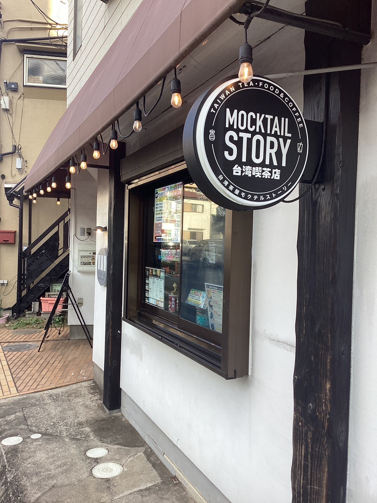

店舗紹介
台湾茶屋モクテルストーリーは台湾出身のオーナーが手掛ける『津田沼で一番近い台湾』がコンセプトのモクテルカフェです。
基本情報
- 住所: 千葉県習志野市谷津1-11-4 1F
- 営業時間: 11:00 - 19:00
- 定休日: 水曜日・木曜日
店舗の写真
外装
内装

メニュー

アクセス
JR総武線「津田沼駅」徒歩10分
新京成「京成津田沼駅」徒歩13分
新京成「京成谷津駅」徒歩16分
台湾茶屋モクテルストーリーは台湾出身のオーナーが手掛ける『津田沼で一番近い台湾』がコンセプトのモクテルカフェです。
JR総武線「津田沼駅」徒歩10分
新京成「京成津田沼駅」徒歩13分
新京成「京成谷津駅」徒歩16分